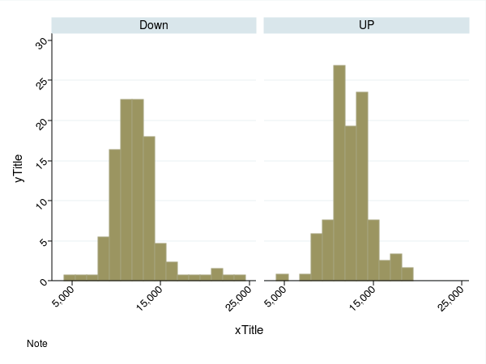

. sysuse sp500, clear
. gen trend = "UP" if change > 0 & change != .
. replace trend = "Down" if change < 0 & change != .
. gen month = month(date)
. gen evenmonth = month if mod(month, 2) == 0
. hist volume, by(trend)
. grpah export vol_by_trend.png, replace width(600) height(450)
. hist volume, percent by(trend, note("Note") graphregion(color(white))) color(*1.3) xtitle("xTitle") xlabel(5000(10000)25000, angle(45)) ytitle("yTitle", height(6)) ylabel(0(5)30, angle(45))
. graph export vol_by_trend2.png, replace width(600) height(450)

. graph bar month
. export month1.png, replace width(600) height(450)

. graph bar, over(month)
. export month2.png, replace width(600) height(450)
. graph bar high, over(month)
. export high.png, replace width(600) height(450)

. graph bar high low, over(month)
. export high_low.png, replace width(600) height(450)

. graph bar high low, over(month, label(angle(45))) graphregion(color(white))) b1title("barTitle") ytitle("yTitle", height(6)) legend(lab(1 "High") lab(2 "Low"))
. export high_low2.png, replace width(600) height(450)
. graph bar high, over(evenmonth)
. export evenhigh.png, replace width(600) height(450)